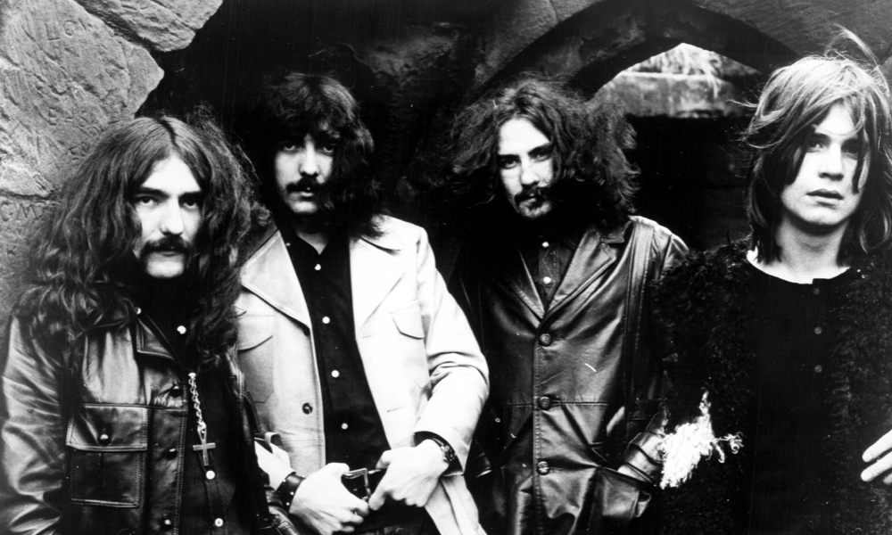
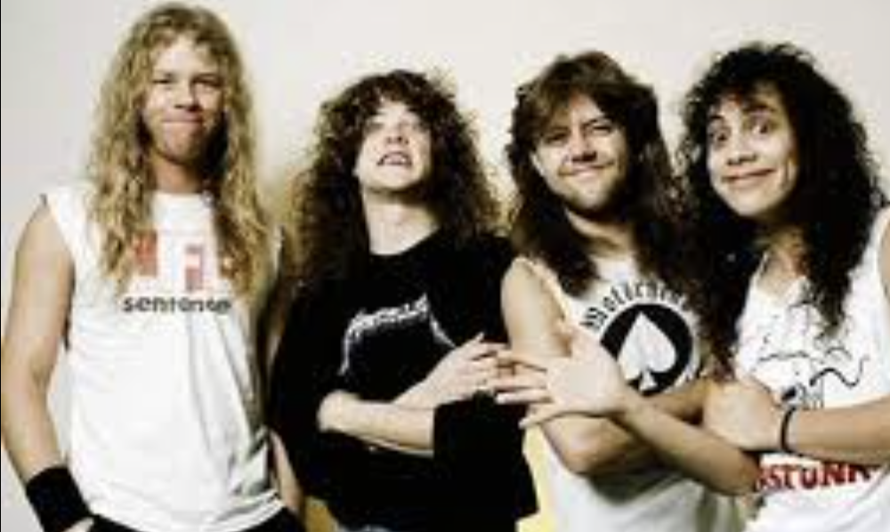
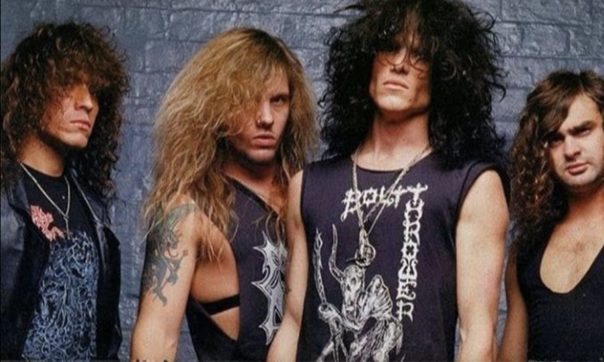
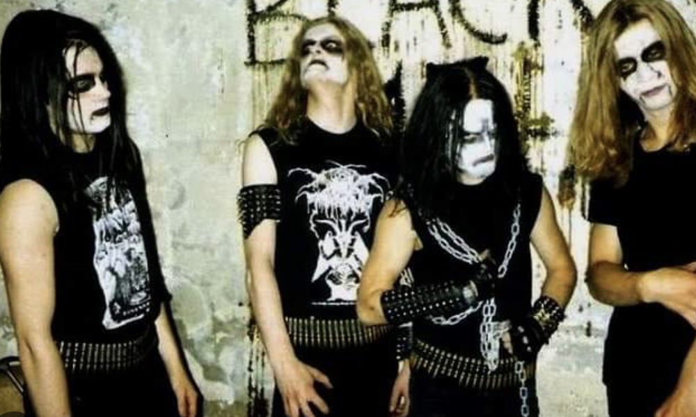
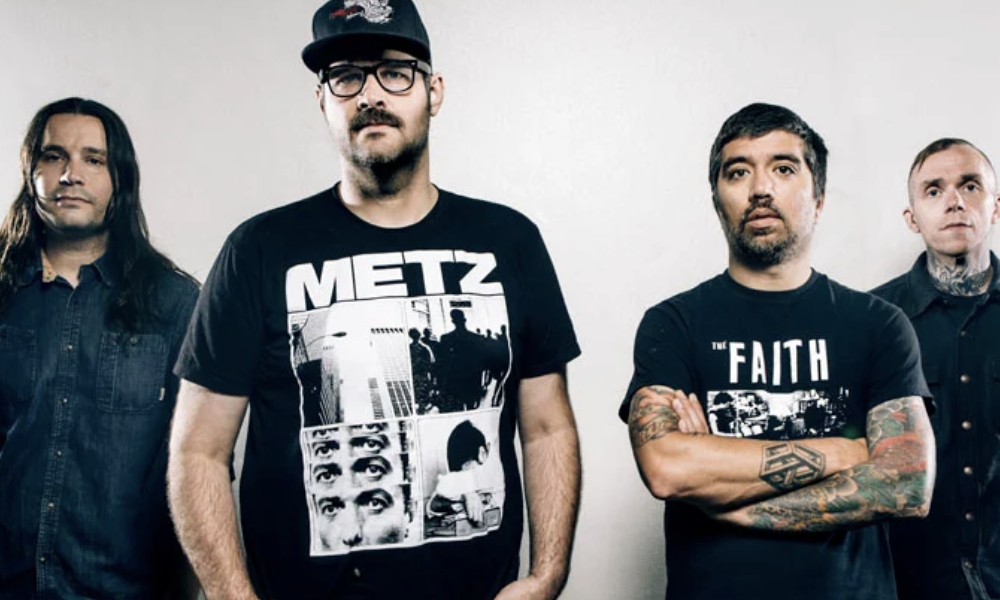

Heavy Metal
Heavy Metal is a genre of music that began in the late 1960s in the United Kingdom, and is usually characterized by a combination of loud distorted electric guitars, electric bass, drums and sung or often harsh vocals. Below is an overview of some popular sub-genres, click the the titles and images for more information!
-
'Proto'-Metal (pre-1970)
Certain artists that pre-dated the accepted conception of metal as we know it still paved the way what the genre would eventually become. Artists include Led Zeppelin, AC/DC, The Rolling Stones and Cream.

Example: Led Zeppelin: Whole Lotta Love (1969)
-
Heavy Metal
Heavy Metal is generally accepted to have been concieved by Black Sabbath on their debut self-titled album. After this a number of British bands followed suit (commonly refered to as the New Wave of British Heavy Metal), notably Judas Priest, Saxon, Motorhead and Iron Maiden.

Example: Black Sabbath: War Pigs (1970)
-
Thrash Metal
Thrash metal began as an American response to the New Wave of British Metal in the mid-1980s, pushing the boundaries with a faster, more aggressive sound. Pioneers include Metallica, Slayer, Exodus and Testament.

Example: Metallica: Creeping Death (1984)
-
Death Metal
Death metal gained popularity in parallel to thrash metal, particularly in Florida. It's notable for it's use of screamed or growled vocals, low-tuned guitars and complex song structures. Pioneers include Morbid Angel, Death, Possessed and Obituary.

Example: Morbid Angel: Immortal Rites (1989)
-
Black Metal
British Band 'Venom' popularised the term black black metal with their 1982 album of the same name. The sound inspired a wave of bands, particularly in Norway in the early to mid nineties, to adopt satanic imagery and to reject the more popular death metal sound and replace it with lo-fi production, shrieked vocals and a 'buzz-saw' guitar tone.

Example: Mayhem: Freezing Moon (1994)
-
Hardcore
More an offshoot of punk than metal, hardcore began in the late 1970s in Los Angeles, California. As time went in bands began to combine elements of hardcore with metal for a unique sound that appealed to both punks and metalheads. Various subgenres include metalcore, deathcore and grindcore, and notable bands across the spectrum of harcore include Black Flag, Minor Threat, Sick Of It All and Converge.

Example: Converge: Concubine (2001)